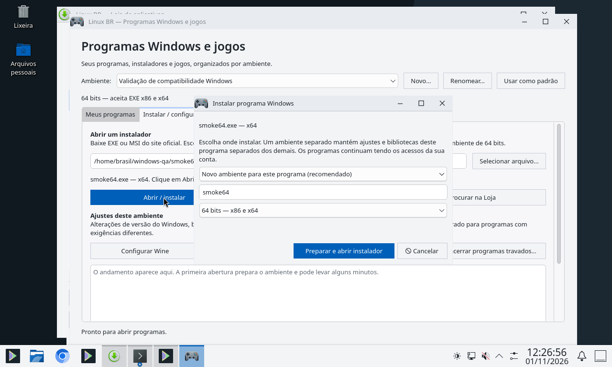

Abra Programas Windows e jogos para iniciar um instalador ou consultar as opções de jogos e controles. Nas fichas da Loja, confira o formato testado. A compatibilidade varia por versão do programa e por recursos como ativação, drivers e sistemas antitrapaça.
